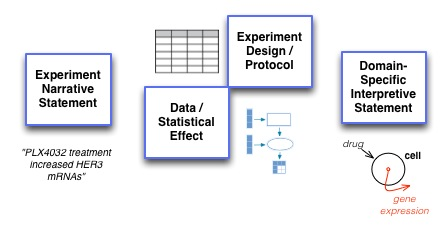
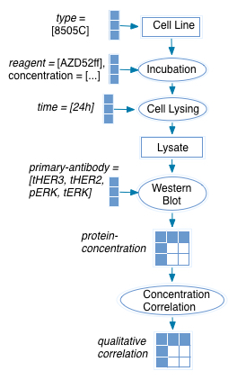

Here we describe a possible approach to evaluating the process of extracting experimental evidence from pathway papers automatically based on the Big Mechanism principle of 'reading against a model'.
Following the underlying premise of conducting reading evaluation within the Big Mechanism program as 'reading against the model', we examine how the structures being proposed for reading against an interpretive model (such as BioPax) might also apply to reading against a model of experimental observations. The relationship between interpretative assertions (such as those generated against a BioPax model) and text describing experimental results is relevant here:

As a representation, BioPax and other formal representations of pathways do not explicitly represent the intermediate elements required to represent experimental design and data. Thus to evaluate this multi-stage process, simply focussing only on the ability of the system to generate final-stage interpretive assertions is likely to direct focus too heavily on the end result (and disempower staged approaches that explicitly deal with experimental evidence).
Elements that require explicit representation within the model to be evaluated against include:
experimental protocol including:
entities, which could consist of:processes, which could consist of:
variables denoting the data structures used to frame data:
experimental data itself which consists of:
statistical-effects based onmeasurements that are contextualized and given meaning byparameters and constants which denote the circumstances under which each measurement is made and allow it to be interpreted in context. Within the L2K2R2 reading evaluation model for reading against BioPax, evaluation takes place by representing the model M as a list of assertions. Each reading system produces lists of evidence with a relation for each assertion pertaining to the model (new; confirm; refute).
BioPax does provide a framework for attaching evidence to models which does not currently extend to support details to the extent required above. We will characterize evidence within BioPax models in a way that is consistent with the modeling approach described above so that BioPax assertions of evidence may be included in the model under evaluation. This will permit the extension of phase 1 evaluation to include experimental evidence at later phases.
Given a model (from Montero et al. 2013, Figure 5B) such as the one shown below:

With this text from the figure legend:
B, 8505C cells were treated with increasing concentrations of AZD6244. Lysates were extracted at 24 h post-treatment and immunoblotted with the indicated antibodies.
And the following text from the results section to assert data:
The effects of the MEK inhibitor on total HER2, HER3 protein and on pHER3 were dose dependent, and inversely associated with the degree of inhibition of pERK (Fig. 5B)
This model generates this KEfED data structure:
?qualitative-correlation
[ ?cell-type ][ ?reagent ][ ?time ][ ?primary-antibody ]
The statement basically makes four statements.
?qualitative-correlation
[ 8505C ][ AZD52ff ][ 24h ][ tHER2 ] = 'positive'
?qualitative-correlation
[ 8505C ][ AZD52ff ][ 24h ][ tHER3 ] = 'positive'
?qualitative-correlation
[ 8505C ][ AZD52ff ][ 24h ][ pHER3 ] = 'positive'
?qualitative-correlation
[ 8505C ][ AZD52ff ][ 24h ][ pERK ] = 'negative'
How does this information inform a BioPAX-style model?
The simple answer to this is that "it doesn't"